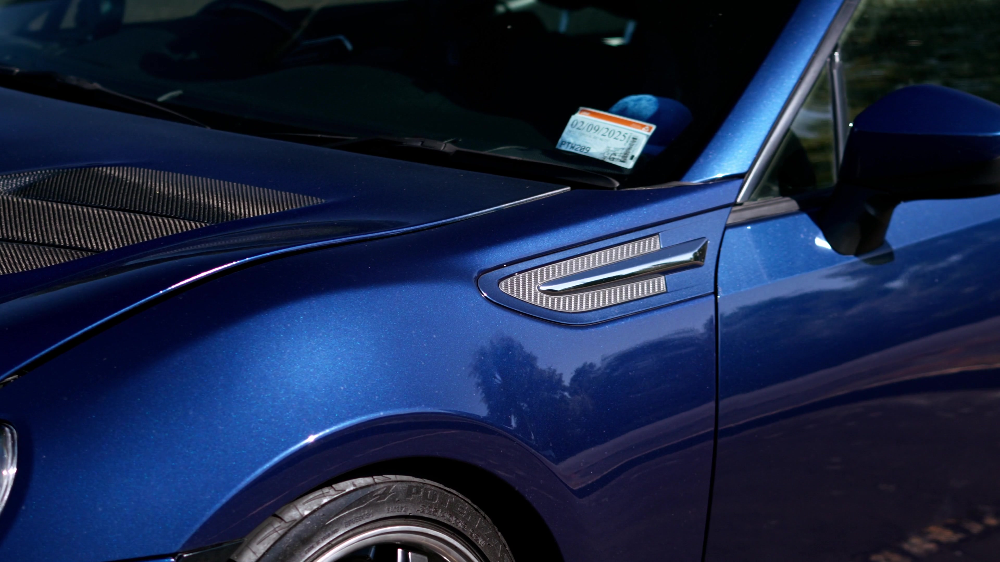

Le vitrage

Blackteint33 · Coimères, Gironde
Vitres teintées & esthétique automobile.
Le soin de votre auto, près de Langon.
Le sens du détail
Films teintés, entretien de l’habitacle et soin de la carrosserie. Découvrez les prestations de Blackteint33.
Les réalisations